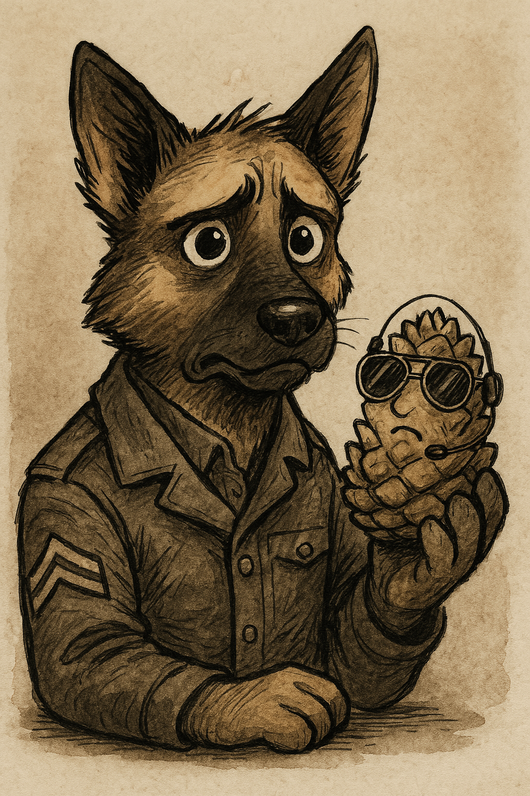
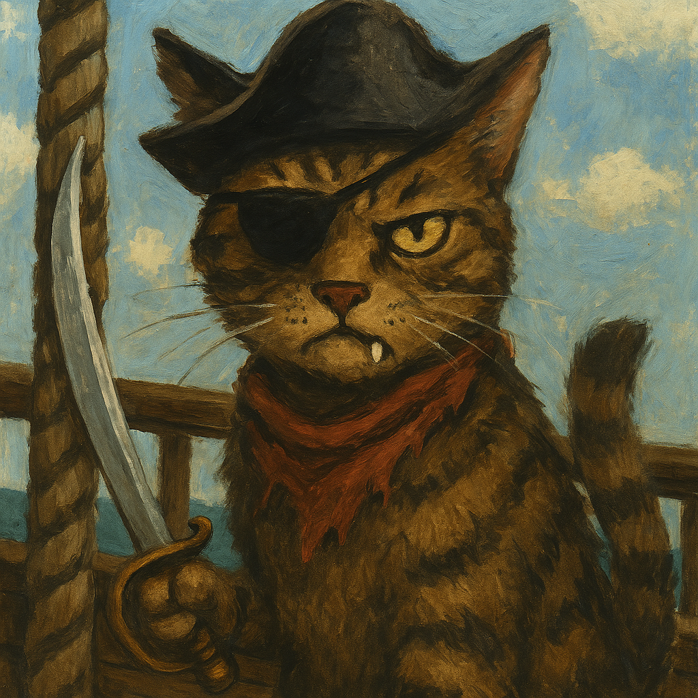

The UOC Observer
H'Online Since 2024 Fwend

The morning was bright. The sky was full h’of clouds. The bushes hummed wivv sleepy bees.
H’Allen was not enjoying any h’of it.
He was dragging three bags of mjilk bones, a crumpled map, three umbrellas, a ladle, and a shopping list titled “To Do Since January 2023”.
Ten paces behind him, a Behbej bounded full tilt. Every time H’Allen trudged ahead, the Behbej had to race after him—legs skittering, tail high, nose twitching. It was a game to the pup. It was not a game to H’Allen.
“H’Allen!” the Behbej yipped. “You forgot da mop!”
“I don’t need the mop,” muttered H’Allen, “because the mop wasn’t on the list when I left.”
“But it’s on it now!” said the Behbej, beaming and gnawing a fresh scrap of paper. “H’I updated it!”
H’Allen twitched. He moved forward, eyes narrowed.
“H’ALLEN! YOU FORGOT THE TINS!”
Twitch. Turn. Glare. “What tins.”
The Behbej produced a can opener from somewhere mysterious and pointed solemnly into the sky.
H’Allen sighed. A full-body sigh. One that startled a nearby crow into immediate therapy.
He turned the corner—
And stopped dead.
There was someone there.
He squinted. “Oh. It’s… you.”
The voice that answered was smooth. Familiar. It carried a smile, but not a warm one.
They spoke. Not loud. Not long. There was a moment of laughter. Then a pause. H’Allen frowned.
“Well, that’s not very fair. I think the record will show I’ve been treated quite—”
CLANG.

A hard noise. A hollow one. Metal against bald.
Silence.
Around the corner, the Behbej crept—just far enough to see a glint of light across the stones, and a slow, thick smear of red-pink sludge.
Blarbasloppa.
He gasped.
And bolted.
Within the hour, UOC was in uproar.
Hon stood in the centre of the yard, clipboard trembling. Nigel was barking into a walkie talkie. Methuselah and Big Fat Behbej consulted the Standing Orders. Hannibal ate them.
“I request permission to join the search!” barked Sergeant, upright, eyes burning, tail bristling.
There was a pause.
“You may go,” said Hon.
Sergeant’s eyes lit up. “Thank you, sir. I’ll get Terry—”
“YOU’RE RELIEVED,” boomed Big Fat Behbej.
Sergeant blinked. “What?!”
“You said Terry.”
He hesitated. “Terry’s coming too.”
“You’re bringing the pinecone.”
“He’s not just a pinecone,” said Sergeant, clutching Terry tightly. “He’s… he’s been through things. He’s seen things.”
“He’s a pinecone,” said Hon coldly. “You talk to him in meetings.”
Sergeant produced Terry from his pocket with reverence. Terry was now wearing aviators and had a makeshift headset taped to his flaky exterior. Someone had drawn a face on him in biro.
“I don’t like Terry,” Sergeant added, eyes wild. “I’m not friends with Terry. But Terry understands me. He understands the wind. He was the only one who noticed the Kitteh fog patterns last week. He—he tried to warn me!”
“He’s a pinecone,” repeated Hon.
“He’s our only hope,” whispered Sergeant.
“You’re relieved.”
Sergeant tucked Terry back into his jacket, muttering, “Don’t listen to them. They fear what they don’t understand.”
Meanwhile, downriver, the Dashing Daisy was moored to the banks of the Taff.
The Pirates were… barely upright.
A night out at Spoons had turned into a longer night under a scaffolding tarp, and now they were groaning across the deck like injured accordions. The Captain’s hat was stuck to his ear. Someone had drawn fangs on the steering wheel. A pigeon had claimed the helm.
They’d messaged H’Allen.
bring treats n electrolytes u scurvy eweman
No reply.
There was a breeze. Then a rustle. Then silence.
One Pirate squinted into the trees. “Anyone else see movement?”
Another wiped jam off their nose. “Just wind.”
The trees did not move again.
Then—
BOOM. CRACK. YOWL.
Kitteh strike teams launched from the thickets—dozens of them, fast, low, armed with pompom grenades and claws honed on beanbag zippers. They moved like liquid and chaos. One did a triple spin before landing in a litter tray and flipping into cover.
The Pirates roared.
Sabres were drawn—bright, bendy lengths of tin foil taped to broom handles. Biscuit cannons were rolled forward. Squeaky landmines were triggered by leapfrog.
“DEFENCE POSITIONS!” roared the Captain, drawing his blade (a sharpened fish finger taped to a stick). “THIS IS OUR DAISY!”
The masts were manned. Buckets of mjilk and water were hurled from above. One Kitteh took a full pail to the face and let out a screech that caused three seagulls to abandon their nests.
The Pirates held.
Claws bounced off dustbin-lid shields. Yowls were met with kazoo calls. Gummy worms were weaponised.
For a moment… it looked like UOC might hold the line.
Then it came.
Not a weapon. Not a blade. A noise.
YOWWWWWWWWWLLLLLLLLLLLLLLLLLL.
A harmonised shriek of Kittej fury and ear-piercing pitch. One of the Cats had hooked itself into the speaker system.
The sound dropped the Pirates where they stood.
Plastic sabres clattered. Eyes crossed. Two Pirates bellyflopped overboard voluntarily. The Captain stood wobbling, stunned, his good ear twitching violently.
And that was it.
They were surrounded.
The survivors were lined up. Ropes, glitter tape, and elastic bands secured their paws. The river lapped nearby.
“You have a choice,” purred the lead officer. “Join the H’Empjire. Wonounce King Chance. Swear fealty to the H’Emperor.”
Silence.
One Pirate lifted their head and spat a chewed jelly tot into the river.
“No.”
One by one, they refused.
One by one, they were hurled into the Taff.
Until only Captain remained.
He raised his head and met the eyes of the enemy.
The scarred one. The snarler. The one with one fang and an eye patch made from a cider label.
Commander Scratchulus.
“You’ll never pilot her,” the Captain growled. “The Daisy doesn’t obey strangers.”
Scratchulus smiled.
“Who needs Pirates…”
He turned.
“…when I have Stooges.”
From the hatch behind him came three figures—groomed, regal, cat-like.
McGee adjusted a dial with his tail. Dinozzo twirled a map on his paw. Gibbs purred and licked the lever.
“No,” whispered the Captain.
Scratchulus stepped back.
The final rope was cut.
The Captain tumbled into the Taff.
The Daisy stirred.
The boiler hissed. The vapour surged. The balloon ballooned.
And slowly… slowly… the Dashing Daisy rose.
A new flag unfurled.
Silken purple. Trimmed in gold. Stitched with whiskers.
The crest of the Kittej H’Empjire.
And UOC’s flagship was gone.